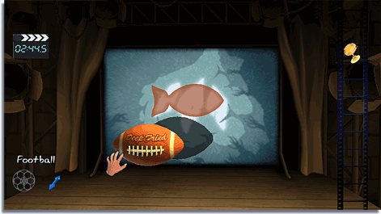

Earn bronze, silver or gold medals depending on how successfully you fill in the puzzle with shadows without going over the lines. Completing puzzles unlocks more puzzles to play as well as more objects to play with in Free Play mode.
All objects used to create shadows are stored in the Film Reel. You can use some of them or all of them just as long as you fill in the shadow target!
Point the Wii Remote at the object you want and press to select it. The object will now be available for you to experiment with on the stage.
To move the object, point at the object with the Wii Remote and hold down then move the Wii Remote.
 To rotate an object, select the object and use the Control Stick to rotate the ball.
To rotate an object, select the object and use the Control Stick to rotate the ball.
With the object selected, hold down  . Move the Control Stick forward or backward to move the object toward or away from the light. You can see the shadow grow or get smaller on the canvas.
. Move the Control Stick forward or backward to move the object toward or away from the light. You can see the shadow grow or get smaller on the canvas.

To turn the object, select the object, hold down and use the Control Stick to turn the object in any direction.
 The indicator will show you what mode you have activated.
The indicator will show you what mode you have activated.
With Wii MotionPlus, the selected object can be controlled by rotating the Wii Remote and

up or down to move the object toward or away from the light.
You can lock an object, freezing it in its place. Have the object selected and press

to lock it, press
again to unlock it.
To Undo your last action just press .
To put an object back in the Film Reel, select the object and press

. This is a handy option for resetting an object.